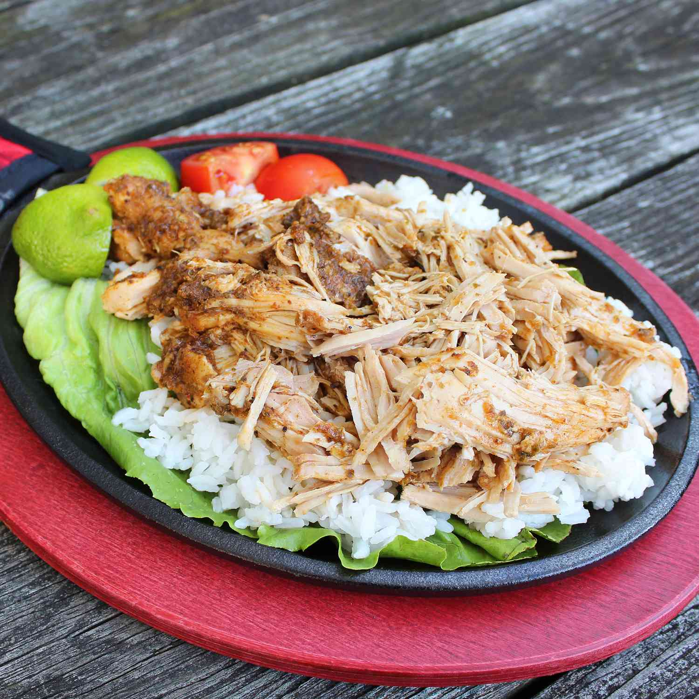

Home
Pernil Pork Food Recipe!

Description: Pernil is a classic Puerto Rican
slow-roasted pork shoulder, deeply marinated overnight in garlic, oregano,
citrus juice, and warm spices. It is roasted low and slow until the meat
is fall-apart tender and juicy, crowned with a crackling, golden-crisp
layer of skin known as cuerito.
Ingredients
- 4 cloves garlic
- 1 large onion, quartered
- 2 tablespoons chopped fresh oregano
- 1 tablespoon ground cumin
- 2 teaspoons ground ancho chile pepper
- 2 teaspoons salt
- 2 teaspoons ground black pepper
- 1 tablespoon white wine vinegar
- 1 tablespoon olive oil, or as needed
- 1 (3 pound) boneless pork loin roast
- 1 lime, cut into wedges
Steps
-
Blend the garlic, onion, oregano, cumin, chile pepper, salt, pepper,
vinegar, and olive oil into a paste.
- Coat the pork loin completely with the paste mixture.
- Place the coated pork into the slow cooker.
- Cover and cook on Low for 6 to 8 hours until fork-tender.
- Shred or chunk the pork, then serve garnished with lime wedges.